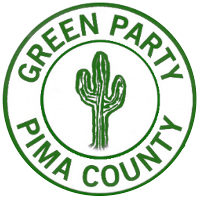

Mark Salazar for Governor:
Empowering fellow Arizonans
with a true CHOICE.
It's time YOU had a VOICE.
Join us!


Mark Salazar for Governor of the state of Arizona
My name is Mark Salazar and I have been endorsed by the Arizona Green Party as a candidate for Governor of the state of Arizona. I have been a registered Green Party member since 2000 and I accept and actively promote the party’s 10 Key Values.
These are the Green Party's Ten Key Values:
- Grassroots Democracy
- Social Justice And Equal Opportunity
- Environmental Wisdom
- Non-Violence
- Decentralization
- Community-Based Economics
- Feminism And Gender Equity
- Respect For Diversity
- Personal And Global Responsibility
- Future Focus And Sustainability
Mark Salazar
I have more than thirty years’ experience in aerospace, audio, and electronic manufacturing industries. I have a Bachelor’s degree in Electrical Engineering from the University of California at Irvine and a Master’s degree in Business Administration from the University of Phoenix.
Originally from California, I have been a resident of Arizona for over 20 years. I am married to my wife Lisa for 21 years and have two teenage daughters; Emilie and Camellia. I enjoy running and hiking with my family on the beautiful trails that Arizona has to offer.
I believe I have a good perspective on global economic and political systems as I have traveled to 6 different continents and 26 different countries. I have a great appreciation for the diversity of people and cultures.
I believe big money in politics is corrupting our democracy and our way of life. I aim to serve, empower, and improve the lives of all Arizonans: the working class, millennials, people of color, immigrants, senior citizens, LGBTQ and all of the 99%.
Mark and his family
Going Green
When asked why don't I run as a Democrat, I tell people that Arizonans are tired of establishment Politics by the Democrats and Republicans. What we fear will happen, HAS ALREADY HAPPENED under the leadership of BOTH major political parties.
From record level deportations of 2.5+ million undocumented immigrants, to more war and regime change (Syria & Libya), drone strikes, mass incarceration, privatization of Healthcare, Wall Street deregulation, disastrous free trade agreements like NAFTA, weakened unions by not passing the Employee Free Choice Act, not fighting for universal healthcare through single payer, receiving billions of dollars from corporations and Wall Street who influence legislation, destroying our planet with fossil fuels and natural gas, and not taking a stance on #NODAPL. The list could go on.
We are an eco-socialist party. We believe that healthcare, education, and housing are human rights. We fight for criminal justice reform, a welcoming pathway to citizenship, and grassroots democracy in our political process. We believe in protecting our environment over profit and that we should transition to 100% clean renewable energy by 2030. Most importantly, we don't receive money from corporate interests.
In 2018, Mark hopes to earn your support and your vote for Governor. We have the opportunity to break the status quo, the 2-party system that has controlled our lives since day 1. Please join in, and let's continue the Political Revolution that Bernie Sanders and Jill Stein started and BREAK the status quo, NOT SHAKE IT UP.
Our campaign will put the most vulnerable people FIRST: the working class, the disappearing middle class, indigenous people. The homeless community, immigrants, people of color, seniors and LGBTQ community because when people come together from all backgrounds, we can accomplish anything!
Donate
Mark knows firsthand what working families have gone through and the challenges they continue to face such as: access to quality public education, college affordability, quality health care, safe neighborhoods, a clean environment, a living wage to support their families, navigating a broken immigration system, and how owning a home is becoming unattainable for so many people. That is why Mark is committed to fighting on behalf of the residents of Arizona and will run a grassroots campaign funded by small dollar donations, NOT corporations or Super PACs. It is possible for our Government to put People, Planet and Peace over profits!
Contact
If you would like to support, be volunteer, or just want to say "hello", please fill in the Signup form at right. Please include your e-mail address. One of our AZGP volunteers will reply ASAP.
Thank you!
Mailing Address:
428 E. Thunderbird Rd Suite 522
Phoenix AZ 85022
 |
||
|  |